?read_excel # where does the helpfile appear?Intro to R for statistics, Day 2
Self-directed exercise
Today’s worksheet introduces you to a real dataset.
The tasks you will cover are:
- reading data into R from an Excel file
- checking and cleaning the data
- revision of some of statistics and graphing that we covered on the first day.
The dataset
The data are from a randomised clinical trial of a new rehabilition intervention (compared to standard post-stroke care) aimed at improving the walking speed of hospital patients. Better walking speed is a good indicator of general stroke recovery.
We have recorded:
- The age and sex of each participant,
- The treatment allocation,
- The hospital department from which they were recruited and
- Time they take to complete a walking task.
Our research questions are:
- Does the treatment improve walking speed compared to controls?
- By how much does it improve, and how certain are we of this?
The dataset can be found at walkingspeed_day2.xlsx
- Powerpoint slides to support this material are at:
Using readxl to read data from Excel files
R is not used for data entry or storage; you are likely to have data stored as an Excel file, a csv file, in a database, or in some other format generated by a device.
So before we can do any analysis we need to import data. We do this in code like everything else in R.
Base R cannot read data from Excel files. But several add-on ‘packages’ can read and write Excel files. Currently the best package for reading Excel files is called readxl. For writing Excel files the openxlsx package is very good.
Whatever the format your raw data there is likely to be a package to read it into R:
readxlfor Excel formathavenfor other statistics packages (Stata, SPSS etc)readrordata.tablefor csv and plain textpzfxfor GraphPad Prism.- Various
Bioconductorpackages for ’omics data in various formats.
Here we will import a dataset from Excel using the readxl package. If you already installed tidyverse then you already have this package.
Once the library is installed we can use the function readxl::read_excel(), which reads data from an excel file.
Make sure the data looks OK and is in the right place on your computer
Before we dive in and import it, we need to make sure our data is in a sensible place.
Open RStudio and switch to the project you created in day 1, or start a new project if necessary.
Then, save the example data
walkingspeed_day2.xlsxfor this tutorial into your project folder. Check that it has appeared in the ‘files’ pane in RStudio.Start a new script file that will eventually include all of the commands we need to import, clean, visualise and analyse the data.
Now open the dataset in Excel and explore the file so that you understand what is there.
Read the help!
We are nearly ready to import our data. But before using a new function its always good to read its documentation.
R and R packages are not as self-explanatory as other software, and so you should expect to spend a fair amount of time, particularly as you are learning R, reading documentation, vignettes, blogs, etc on what R can do, which packages exist, and how to use them.
The read_excel() function has a few different options so first we should look at the help file:
Make sure to check:
- Description what does the function do,
- Usage what is the syntax
- Arguments detail of what all the options mean
- Value what do I get when I run this
- Examples (usually very helpful)
Note from the help file that read_excel() can extract data from different sheets and ranges of an Excel workbook, can use or ignore column names, and allows you to specify the type of data (numeric, dates, text etc) if you want to, or leave it to R to guess.
Many R packages also have vignettes or websites including simpler guides to their use in specific cases. readxl has a website that you might find helpful: https://readxl.tidyverse.org/
Now we’ll load the data. We want to use the ‘walking speed’ data from the walkingspeed.xlsx spreadsheet.
- Open the spreadsheet in Excel and find this sheet. The data we want is in the sheet called ‘day2’.
From the read_excel() help file we can deduce the syntax to load this data into R:
library(readxl)Warning: package 'readxl' was built under R version 4.1.3walkingdat <- read_excel(path="walkingspeed_day2.xlsx", sheet="day2")This line assumes that the file ‘walkingspeed_day2.xlsx’ is in the current working directory (you can check what this is with getwd(). The current working directory is shown just above the R console window. You can see the files in the current working directory in the ‘Files’ tab on the bottom right of the RStudio window. When you create or load a project RStudio will set the working directory to the root of the project directory.
This line calls the read_excel() function, with the arguments ‘path’, ‘sheet’ set. The other arguments will be set to their default values, which you can see from the help file.
We could have set the range of the data in the spreadsheet (I usually do this for safety), but read_excel() can figure it out automatically most of the time; by default it picks the biggest continuous chunk of data starting in the top left of the sheet.
Now you should have a ‘data frame’ object called walkingdat in your environment, which includes the data from the Excel sheet ready to process and analyse.
Our workflow now is:
- Clean and code
- Visualise
- Describe
- Model
- Diagnose model
- Interpret
Cleaning
Before we can analyse our data we should check each variable to make sure that it looks OK.
We’ll use functions from day 1 to explore the content and structure of the dataset, and the distributions of the main variables. We can then address any problems that we find.
Recall these functions from the day 1 notes. We are checking that the variables have the correct type, and the distributions of the categorical variables.
This is an important aspect of any data analysis and we should not skip this step.
library(tidyverse)Warning: package 'tidyverse' was built under R version 4.1.3-- Attaching packages --------------------------------------- tidyverse 1.3.1 --v ggplot2 3.4.1 v purrr 0.3.4
v tibble 3.2.1 v dplyr 1.1.2
v tidyr 1.2.0 v stringr 1.5.0
v readr 2.1.2 v forcats 0.5.1Warning: package 'ggplot2' was built under R version 4.1.3Warning: package 'tibble' was built under R version 4.1.3Warning: package 'tidyr' was built under R version 4.1.3Warning: package 'readr' was built under R version 4.1.3Warning: package 'dplyr' was built under R version 4.1.3Warning: package 'stringr' was built under R version 4.1.3-- Conflicts ------------------------------------------ tidyverse_conflicts() --
x dplyr::filter() masks stats::filter()
x dplyr::lag() masks stats::lag()summary(walkingdat) patid group time sex
Min. : 1.00 Length:135 Min. : 0.000 Length:135
1st Qu.: 34.50 Class :character 1st Qu.: 2.167 Class :character
Median : 68.00 Mode :character Median : 2.426 Mode :character
Mean : 68.01 Mean : 4.175
3rd Qu.:101.50 3rd Qu.: 2.949
Max. :136.00 Max. :185.362
age department
Length:135 Min. :1.000
Class :character 1st Qu.:2.000
Mode :character Median :3.000
Mean :2.607
3rd Qu.:3.500
Max. :4.000 class(walkingdat$age)[1] "character"# hist(age)
table(walkingdat$group)
control treat
68 67 table(walkingdat$sex)
F M
35 100 table(walkingdat$department)
1 2 3 4
28 31 42 34 You will have noticed that one of the numerical variables, age, has been loaded as character variable and not a numeric. We cannot do anaysis with a character variable!
Why do you think the variable is imported as character and not numeric?
We can convert age to a numeric using as.numeric.
# Tidyverse version:
walkingdat <- walkingdat |> mutate(age = as.numeric(age))Warning: There was 1 warning in `mutate()`.
i In argument: `age = as.numeric(age)`.
Caused by warning:
! NAs introduced by coercion# Base R version:
walkingdat$age <- as.numeric(walkingdat$age)What warning message did you get when you converted this variable? What does it mean?
How might we check on the age and time variables to see if the distribution looks OK?
We could make some descriptive statistics and basic plots!
hist(walkingdat$age)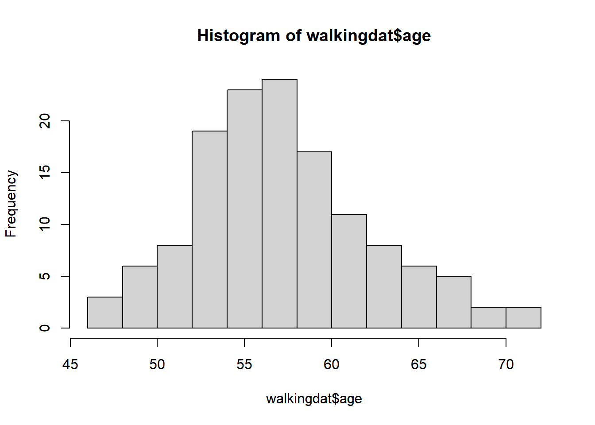
hist(walkingdat$time)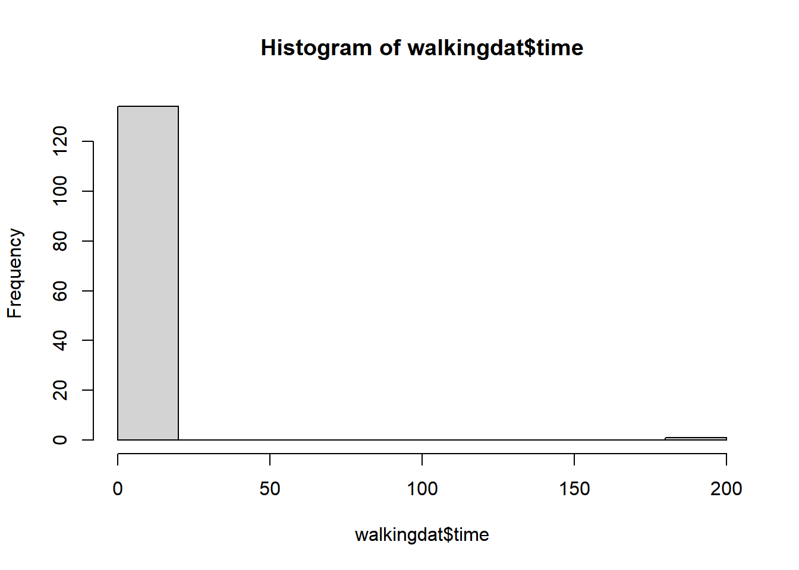
range(walkingdat$time, na.rm=TRUE)[1] 0.000 185.362range(walkingdat$time, na.rm = TRUE)[1] 0.000 185.362Dealing with outliers
It looks like there are some unreasonably high and low values of walking time.
We can make another graph of walking speed against age, this time on a logarithmic scale so both the extreme high and extreme low points are visible, to see what is going on.
## ggplot2 version
library(ggplot2)
ggplot(walkingdat) + aes(x=age, y=time) + geom_point() + scale_y_log10()Warning: Transformation introduced infinite values in continuous y-axisWarning: Removed 1 rows containing missing values (`geom_point()`).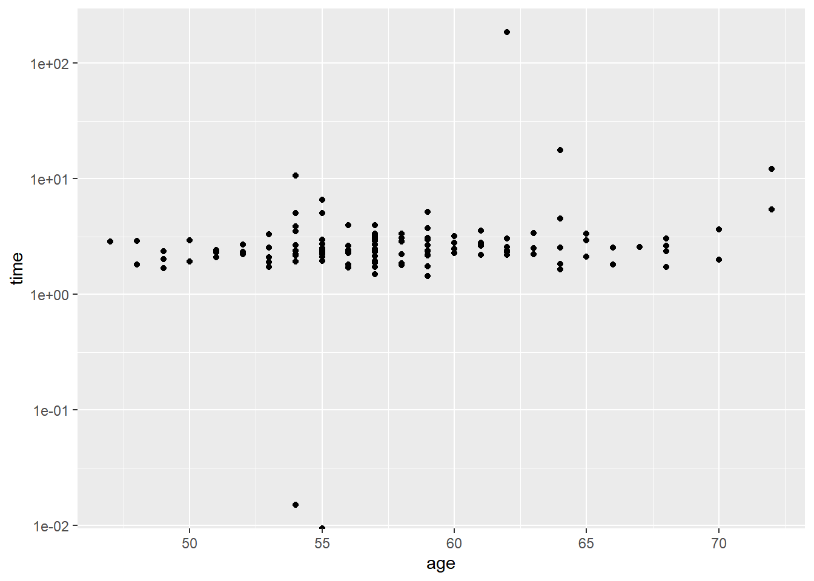
## base R version
plot(walkingdat$age, walkingdat$time, log="y")Warning in xy.coords(x, y, xlabel, ylabel, log): 1 y value <= 0 omitted from
logarithmic plot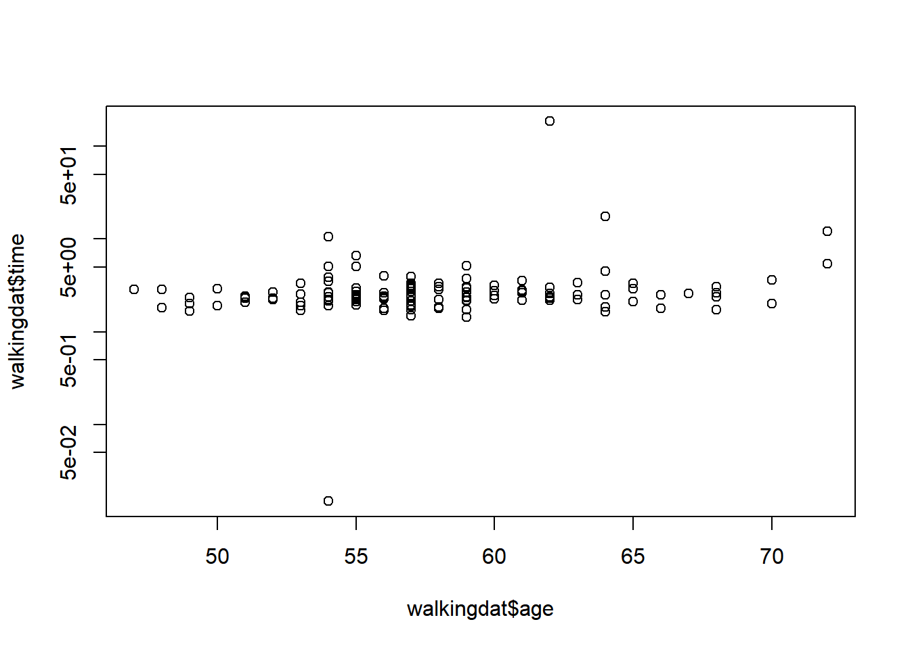
It seems there are some values for time that are likely to be technical errors. We can remove these values (set them to missing) in a few different ways:
## base R method
walkingdat$time[walkingdat$time<0.1] <- NA
walkingdat$time[walkingdat$time>100] <- NA
## Using mutate and ifelse
walkingdat <- walkingdat |> mutate(time = ifelse(time<0.1,NA,time))
walkingdat <- walkingdat |> mutate(time = ifelse(time>100,NA,time))
## the 'pure' tidyverse way with case_when is a bit clunky.
## look up 'case_when()' to understand this line
walkingdat <- walkingdat |> mutate( time = case_when(time<0.1 ~ NA_real_ ,
time>100 ~ NA_real_,
TRUE ~ time) )
# Now check the distribution of time again.
hist(walkingdat$time, breaks=100)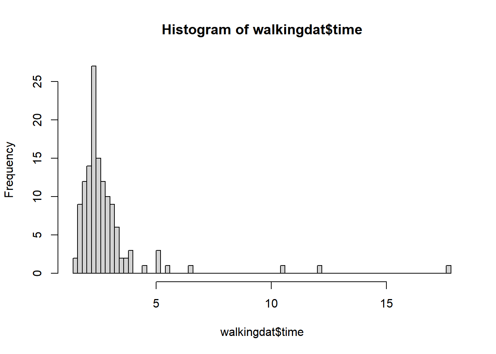
range(walkingdat$time, na.rm = TRUE)[1] 1.435 17.641Now we have a cleaned dataset in our environment we can proceed with our visualisation and analysis:
Analysis - Exercises
Add commands to your script file to answer the following questions. Add comments (lines beginning with # to help you remember what you did and why!).
Some solutions are posted at the bottom of the page, but it will help you a lot to try to answer them on your own, by discussing with colleagues, or by looking up help online before using the solutions.
If you don’t understand the given solution, then please ask and we can go through it in the class.
We will discuss the testing, modelling and graphing elements in more detail on day 3, but it would be helpful to attempt these today.
- Structure of the dataset
- What are the names of the variables that comprise the
walkingdatadataframe? - What is the class of each?
- How many columns and rows does it have?
- What are the names of the variables that comprise the
- Descriptive statistics
- What is the age of youngest patient?
- What is the age of the oldest patient?
- Are the oldest and youngest patient male or female?
- Cross-tabulation
- How many Male and Female patients are there?
- Is the sex ratio balanced between treatment groups?
- How many women are there of age under 50? How many men are there of age under 50?
- Descriptive statistics using a subset of the data
- What is the average walking speed for men between 50 and 60 years of age?
- Deriving new variables
- Create a new column that will have the speed of walking, that is 1/time.
- Create a new column that will have the time rounded up to nearest 10th of a second.
- Graphing
- Consider what kind of graph you might make to illustrate the difference in walking speed between treatment groups, and try to make it using ggplot. Eg:
- Make a scatter plot of time vs age
- Make the colour of each point reflect the treatment group
- Make a box plot of time by sex, with a different coloured box per sex
- Label the axes appropriately
- Try a violin plot instead of a boxplot (with geom_violin). Which do you prefer?
- Make any other adjustments you think are informative!
- Hypothesis Testing
- What is the difference in average walking speed between control patients and treated patients?
- Is this difference statistically significant? Use t-test
t.test()and Mann-Whitney testswilcox.test()to examine the differences between the groups. Look up the syntax for t.test() and wilcos.test() using the help system, and use them to check whether the time taken to complete the task varies by treatment status. In each case use the version of the function that takes aformulaagument. Remember theformulasyntax from theboxplotandlmfunctions in day 1. - Compare the p-values for each method.
- Consider the assumptions for a t-test, and whether they are met in this dataset.
- Do you believe that treatment affects walking speed?
- Linear model diagnostics
- Estimate a linear model (with
lm) to estimate/test the effect of treatment on task completion time. - Use
summaryto get the model coefficients and p-values - Use
broom::tidyto get the model coefficients and p-values - Compare the model results to the equivalent t-test
- Extend the model to include the effects of age and sex as potential covariates.
- Use
plot()to explore the model diagnostics - Use
performance::check_modelto explore the model diagnostics - Now estimate a new model to compare the task completion speed between groups.
- Get the model coefficients and p-values
- Check the model diagnostics using
plotorperformance::check_model - Why are the result from this model different? How do you interpret the results?
- Can you get the confidence intervals for the treatment effect (use the help for
broom::tidy) - Use
model_summarypackage to make a pretty model summary table
- Estimate a linear model (with
Solutions
The exercises will have many possible solutions, under each exercise we have listed a few possible answers. Most are possible using the functions we have introduced in day 1 of the course, or with functions I suggest in the questions, but in some cases there are other solutions that I have given using different functions/packages.
If you answered the questions another way then that’s fine, but do try to understand how the given solutions work.
Structure of the dataset
What are the names of the variables that comprise the walkingdat dataframe?
library(tidyverse)
# Eg
str(walkingdat)tibble [135 x 6] (S3: tbl_df/tbl/data.frame)
$ patid : num [1:135] 1 2 3 4 5 6 7 8 9 10 ...
$ group : chr [1:135] "treat" "control" "treat" "control" ...
$ time : num [1:135] 1.9 3.54 2.93 1.82 2.2 ...
$ sex : chr [1:135] "M" "M" "M" "M" ...
$ age : num [1:135] NA 61 65 48 62 62 57 57 57 55 ...
$ department: num [1:135] 3 3 1 2 2 4 2 4 3 2 ...names(walkingdat)[1] "patid" "group" "time" "sex" "age"
[6] "department"summary(walkingdat) patid group time sex
Min. : 1.00 Length:135 Min. : 1.435 Length:135
1st Qu.: 34.50 Class :character 1st Qu.: 2.169 Class :character
Median : 68.00 Mode :character Median : 2.428 Mode :character
Mean : 68.01 Mean : 2.866
3rd Qu.:101.50 3rd Qu.: 2.944
Max. :136.00 Max. :17.641
NA's :3
age department
Min. :47.00 Min. :1.000
1st Qu.:54.00 1st Qu.:2.000
Median :57.00 Median :3.000
Mean :57.68 Mean :2.607
3rd Qu.:60.75 3rd Qu.:3.500
Max. :72.00 Max. :4.000
NA's :1 What is the class of each? What is the class of walkingdat?
str(walkingdat)tibble [135 x 6] (S3: tbl_df/tbl/data.frame)
$ patid : num [1:135] 1 2 3 4 5 6 7 8 9 10 ...
$ group : chr [1:135] "treat" "control" "treat" "control" ...
$ time : num [1:135] 1.9 3.54 2.93 1.82 2.2 ...
$ sex : chr [1:135] "M" "M" "M" "M" ...
$ age : num [1:135] NA 61 65 48 62 62 57 57 57 55 ...
$ department: num [1:135] 3 3 1 2 2 4 2 4 3 2 ...lapply(walkingdat, class) # 'lapply' takes a list (first argument) and applies a function (second argument) to every element of that list.$patid
[1] "numeric"
$group
[1] "character"
$time
[1] "numeric"
$sex
[1] "character"
$age
[1] "numeric"
$department
[1] "numeric"walkingdat |> map(class) # map is the tidyverse version of lapply. It is in the 'purrr' package which is loaded when you library(tidyverse).$patid
[1] "numeric"
$group
[1] "character"
$time
[1] "numeric"
$sex
[1] "character"
$age
[1] "numeric"
$department
[1] "numeric"class(walkingdat) # walkingdat is a dataframe, but it is also a `tbl` which is a datframe with a few tidyverse enhancements.[1] "tbl_df" "tbl" "data.frame"- How many columns and rows does
walkingdathave?
dim(walkingdat) # Get the dimension[1] 135 6nrow(walkingdat) # Get the number of rows[1] 135length(walkingdat) # The 'length' of a data frame is the numve[1] 6Descriptive statistics
What is the age of youngest patient?
# look at the help for what na.rm does. You'll see many of the summary statistics need this.
min(walkingdat$age, na.rm=TRUE)[1] 47walkingdat |> summarize(min(age, na.rm=TRUE))# A tibble: 1 x 1
`min(age, na.rm = TRUE)`
<dbl>
1 47walkingdat |> select(age) |> min(na.rm=TRUE)[1] 47What is the age of the oldest patient?
max(walkingdat$age)[1] NAwalkingdat |> summarize(max(age, na.rm=TRUE))# A tibble: 1 x 1
`max(age, na.rm = TRUE)`
<dbl>
1 72walkingdat |> select(age) |> max(na.rm=TRUE)[1] 72range(walkingdat$age, na.rm=TRUE)[1] 47 72summary(walkingdat) patid group time sex
Min. : 1.00 Length:135 Min. : 1.435 Length:135
1st Qu.: 34.50 Class :character 1st Qu.: 2.169 Class :character
Median : 68.00 Mode :character Median : 2.428 Mode :character
Mean : 68.01 Mean : 2.866
3rd Qu.:101.50 3rd Qu.: 2.944
Max. :136.00 Max. :17.641
NA's :3
age department
Min. :47.00 Min. :1.000
1st Qu.:54.00 1st Qu.:2.000
Median :57.00 Median :3.000
Mean :57.68 Mean :2.607
3rd Qu.:60.75 3rd Qu.:3.500
Max. :72.00 Max. :4.000
NA's :1 Are the oldest and youngest patient male or female?
walkingdat |> filter(age==47)# A tibble: 1 x 6
patid group time sex age department
<dbl> <chr> <dbl> <chr> <dbl> <dbl>
1 128 control 2.87 F 47 1walkingdat |> filter(age==72)# A tibble: 2 x 6
patid group time sex age department
<dbl> <chr> <dbl> <chr> <dbl> <dbl>
1 20 control 5.42 M 72 2
2 62 control 12.2 M 72 2walkingdat[which.max(walkingdat$age), "sex"]# A tibble: 1 x 1
sex
<chr>
1 M walkingdat[which.min(walkingdat$age), "sex"]# A tibble: 1 x 1
sex
<chr>
1 F Cross-tabulation
How many Male and Female patient are there?
walkingdat |> filter( sex =='F' ) |> count()# A tibble: 1 x 1
n
<int>
1 35walkingdat |> filter( sex =='M' ) |> count()# A tibble: 1 x 1
n
<int>
1 100table(walkingdat$sex)
F M
35 100 walkingdat |> group_by(sex) |> count()# A tibble: 2 x 2
# Groups: sex [2]
sex n
<chr> <int>
1 F 35
2 M 100Is the sex ratio balanced between treatment groups?
walkingdat |> filter( group =='treat', sex =='M' ) |> count()# A tibble: 1 x 1
n
<int>
1 50walkingdat |> filter( group =='treat', sex =='F' ) |> count()# A tibble: 1 x 1
n
<int>
1 17How many women are there of age under 50? How many men are there of age under 50?
walkingdat |> filter(age < 50 , sex =='F' ) |> count()# A tibble: 1 x 1
n
<int>
1 4walkingdat |> filter(age < 50 , sex =='M' ) |> count()# A tibble: 1 x 1
n
<int>
1 2table(walkingdat$sex, walkingdat$age<50)
FALSE TRUE
F 31 4
M 97 2Descriptive statistics using a subset of the data
What is the average walking speed for men between 60 and 70 years of age?
walkingdat |> filter(age >59, age <71, sex =='M' ) |>
select(time) |> pull() |> mean()[1] NAwalkingdat |> filter( age >59, age <71, sex =='M' ) |>
summarise(mean(time))# A tibble: 1 x 1
`mean(time)`
<dbl>
1 NADeriving new variables
Create a new column that will have the speed of walking, that is 1/time.
walkingdat <- walkingdat |> mutate(speed=1/as.numeric(time))Create a new column that will have the time rounded to the nearest 10th of a second.
walkingdat <- walkingdat |> mutate(rounded=round(as.numeric(time), digits = 2))Graphing
Consider what kind of graph you might make to illustrate the difference in walking speed between treatment groups, and try to make it using ggplot.
Make a scatter plot of time vs age Make the colour of each point reflect the treatment group
ggplot(data=walkingdat) +
aes(x=age,y=time,colour=group) +
geom_point()Warning: Removed 4 rows containing missing values (`geom_point()`).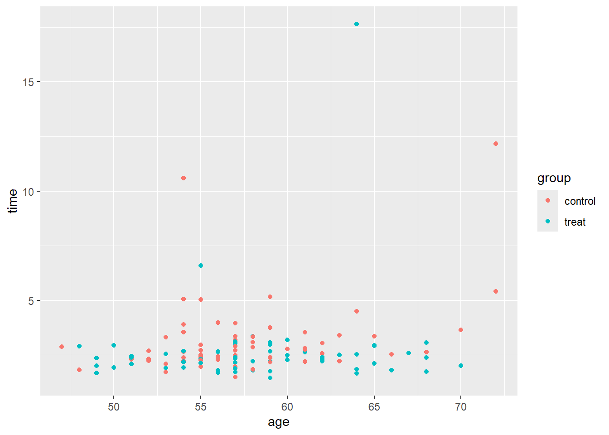
Make a box plot of time by sex, with a different coloured box per sex
ggplot(data=walkingdat) +
aes(x=sex,y=time,fill=sex) +
geom_boxplot()Warning: Removed 3 rows containing non-finite values (`stat_boxplot()`).
Label the axes appropriately
ggplot(data=walkingdat) + aes(x=sex,y=time,fill=sex) + geom_boxplot() + labs(x=“Sex”, y=“Time to complete task (s)”)
Try a violin plot instead of a boxplot (with geom_violin). Which do you prefer? Make any other adjustments you think are informative!
Hypothesis testing
What is the difference in task completion time between control patients and treated patients?
lm( time ~ group , data=walkingdat) |> broom::tidy()# A tibble: 2 x 5
term estimate std.error statistic p.value
<chr> <dbl> <dbl> <dbl> <dbl>
1 (Intercept) 3.12 0.228 13.7 6.23e-27
2 grouptreat -0.512 0.323 -1.58 1.15e- 1lm( time ~ group , data=walkingdat) |> summary()
Call:
lm(formula = time ~ group, data = walkingdat)
Residuals:
Min 1Q Median 3Q Max
-1.6273 -0.7324 -0.4007 0.0606 15.0313
Coefficients:
Estimate Std. Error t value Pr(>|t|)
(Intercept) 3.1213 0.2283 13.675 <2e-16 ***
grouptreat -0.5116 0.3228 -1.585 0.115
---
Signif. codes: 0 '***' 0.001 '**' 0.01 '*' 0.05 '.' 0.1 ' ' 1
Residual standard error: 1.854 on 130 degrees of freedom
(3 observations deleted due to missingness)
Multiple R-squared: 0.01895, Adjusted R-squared: 0.01141
F-statistic: 2.512 on 1 and 130 DF, p-value: 0.1154Is this difference statistically significant?
lm( time ~ group , data=walkingdat) |> anova()Analysis of Variance Table
Response: time
Df Sum Sq Mean Sq F value Pr(>F)
group 1 8.64 8.6364 2.5116 0.1154
Residuals 130 447.03 3.4387 Use t-test t.test() and Mann-Whitney tests wilcox.test() to examine the differences between the groups.
t.test( time ~ group , data=walkingdat)
Welch Two Sample t-test
data: time by group
t = 1.5848, df = 126.66, p-value = 0.1155
alternative hypothesis: true difference in means between group control and group treat is not equal to 0
95 percent confidence interval:
-0.1272116 1.1503631
sample estimates:
mean in group control mean in group treat
3.121303 2.609727 wilcox.test( time ~ group , data=walkingdat)
Wilcoxon rank sum test with continuity correction
data: time by group
W = 3054, p-value = 6.761e-05
alternative hypothesis: true location shift is not equal to 0. Consider the assumptions underlying the t-test, and whether they are met in this dataset
The t-test and the linear model assume that the outcome variable is normally distributed within groups, which is not the case here. So the results from these is probably wrong.
The Mann-Whitney test (Wilcox test) does not make this assumption, and is more robust in this case.
Do you believe that treatment affects walking speed?
Try the t-test or linear model using the speed variable that you created instead of the time variable that is in the dataset.
Diagnostics
Estimate a linear model (with lm) to estimate/test the effect of treatment on task completion time.
mod1 <- lm(data=walkingdat , time ~ group)Use summary to get the model coefficients and p-values Use broom::tidy to get the model coefficients and p-values
mod1 |> summary()
Call:
lm(formula = time ~ group, data = walkingdat)
Residuals:
Min 1Q Median 3Q Max
-1.6273 -0.7324 -0.4007 0.0606 15.0313
Coefficients:
Estimate Std. Error t value Pr(>|t|)
(Intercept) 3.1213 0.2283 13.675 <2e-16 ***
grouptreat -0.5116 0.3228 -1.585 0.115
---
Signif. codes: 0 '***' 0.001 '**' 0.01 '*' 0.05 '.' 0.1 ' ' 1
Residual standard error: 1.854 on 130 degrees of freedom
(3 observations deleted due to missingness)
Multiple R-squared: 0.01895, Adjusted R-squared: 0.01141
F-statistic: 2.512 on 1 and 130 DF, p-value: 0.1154mod1 |> broom::tidy()# A tibble: 2 x 5
term estimate std.error statistic p.value
<chr> <dbl> <dbl> <dbl> <dbl>
1 (Intercept) 3.12 0.228 13.7 6.23e-27
2 grouptreat -0.512 0.323 -1.58 1.15e- 1Compare the model results to the equivalent t-test Extend the model to include the effects of age and sex as potential covariates.
mod2 <- lm(data=walkingdat , time ~ group + age + sex)Use plot() to explore the model diagnostics
## You could plot model 1 or model 2.
plot(mod1)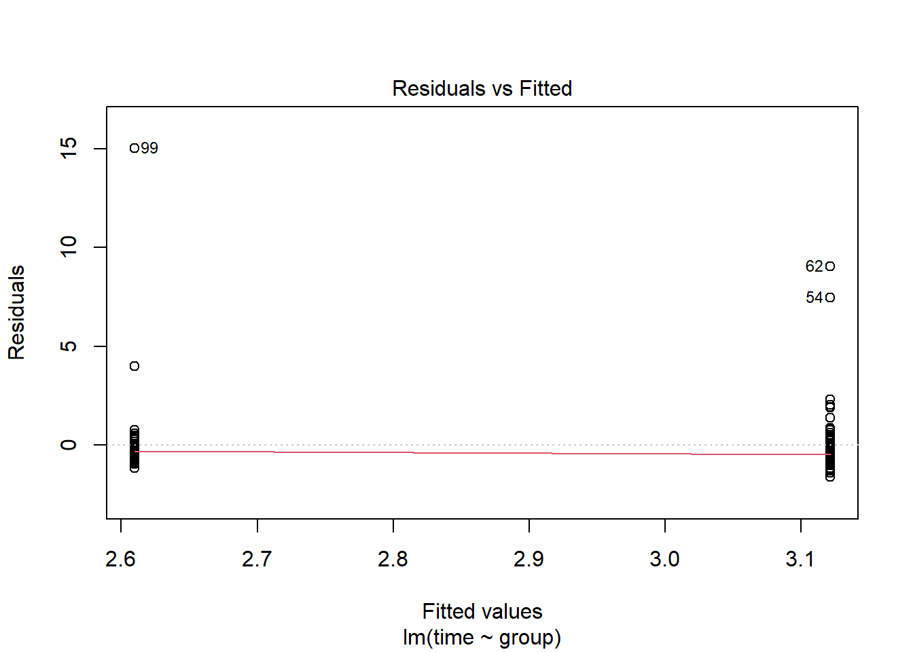
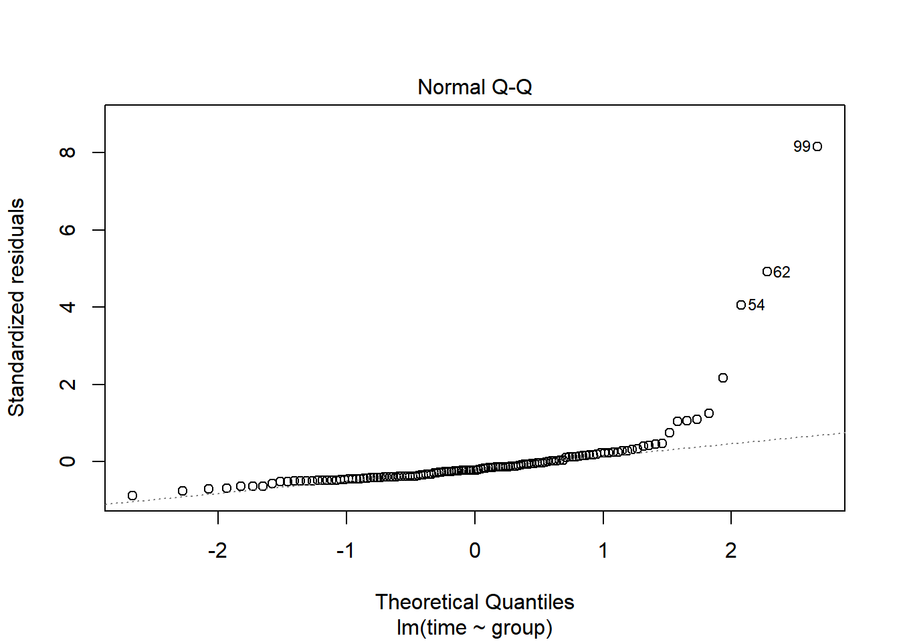
hat values (leverages) are all = 0.01515152
and there are no factor predictors; no plot no. 5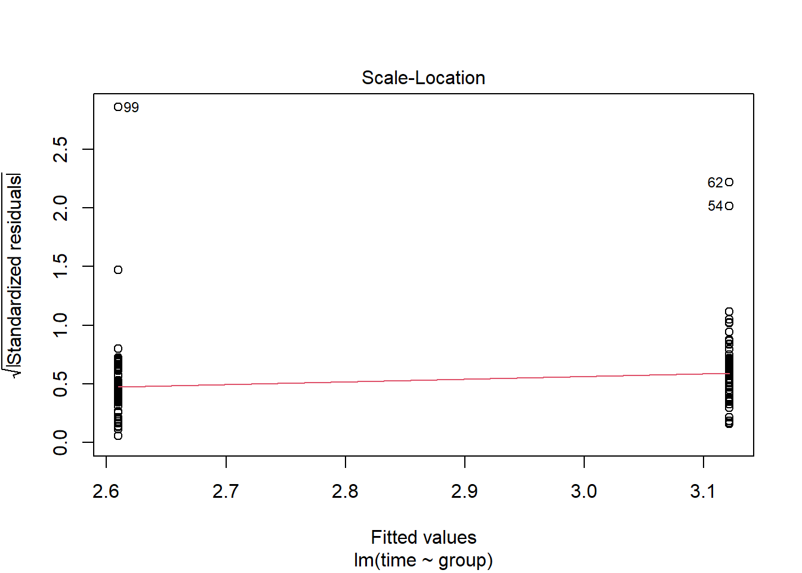
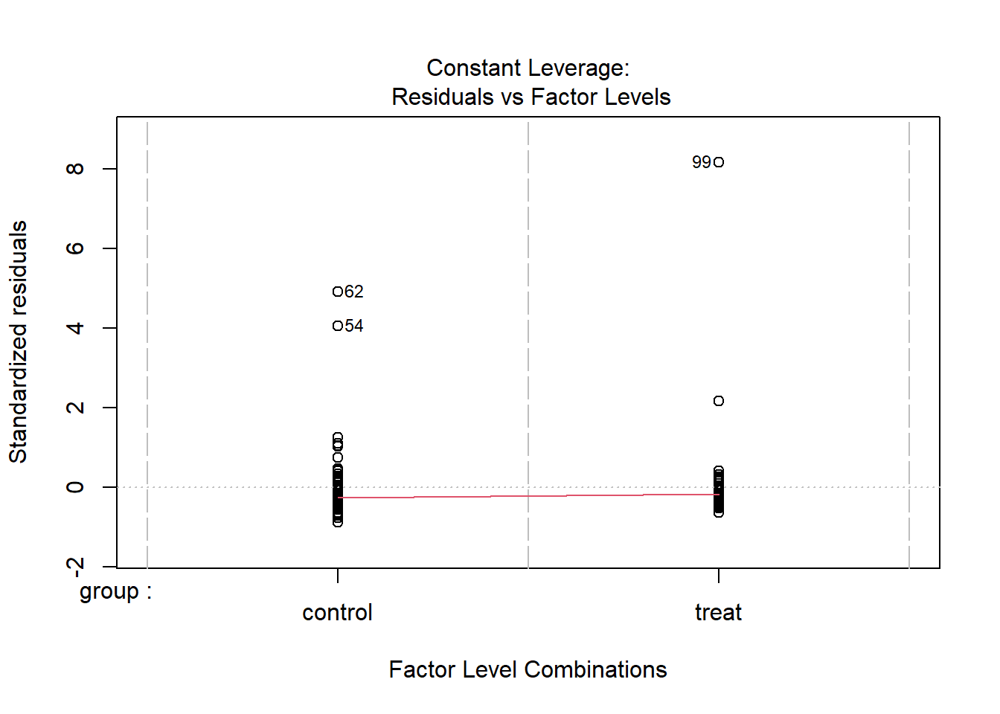
Use performance::check_model to explore the model diagnostics
performance::check_model(mod1)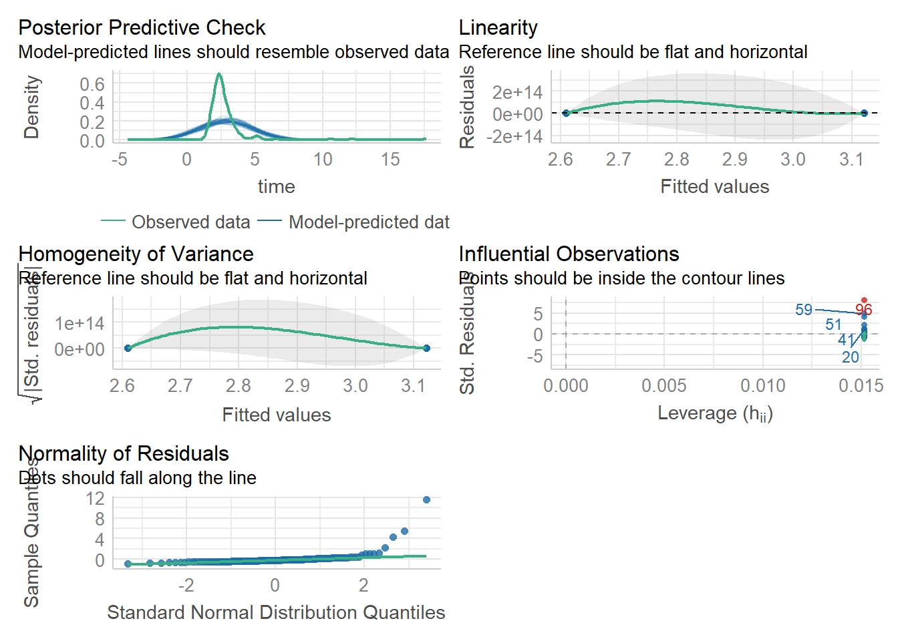
Now estimate a new model to compare the task completion speed between groups. Get the model coefficients and p-values Check the model diagnostics using plot or performance::check_model
walkingdat$speed <- 1/walkingdat$time
mod3 <- lm(data=walkingdat , speed ~ group + age + sex)
performance::check_model(mod3)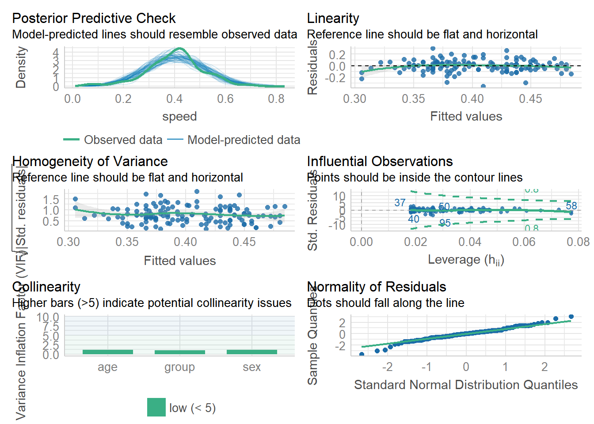
a. Why are the result from this model different? How do you interpret the results?
a. Can you get the confidence intervals for the treatment effect (use the help for `broom::tidy`)
a. Use `model_summary` package to make a pretty model summary tablemodelsummary::modelsummary(mod3)| Model 1 | |
|---|---|
| (Intercept) | 0.607 |
| (0.105) | |
| grouptreat | 0.071 |
| (0.018) | |
| age | -0.004 |
| (0.002) | |
| sexM | -0.010 |
| (0.022) | |
| Num.Obs. | 131 |
| R2 | 0.142 |
| R2 Adj. | 0.122 |
| AIC | -215.0 |
| BIC | -200.6 |
| Log.Lik. | 112.511 |
| F | 7.004 |
| RMSE | 0.10 |
## I didn't do very well!
modelsummary::modelsummary(mod3 ,
estimate="{estimate} [{conf.low}, {conf.high}] {stars}",
coef_rename = c('(Intercept)'="Intercept",
'grouptreat'="Treatment",
'age'="Age (per year)",
'sexM'="Male vs Female"),
statistic=NULL, )| Model 1 | |
|---|---|
| Intercept | 0.607 [0.398, 0.815] *** |
| Treatment | 0.071 [0.035, 0.107] *** |
| Age (per year) | -0.004 [-0.008, 0.000] * |
| Male vs Female | -0.010 [-0.054, 0.034] |
| Num.Obs. | 131 |
| R2 | 0.142 |
| R2 Adj. | 0.122 |
| AIC | -215.0 |
| BIC | -200.6 |
| Log.Lik. | 112.511 |
| F | 7.004 |
| RMSE | 0.10 |